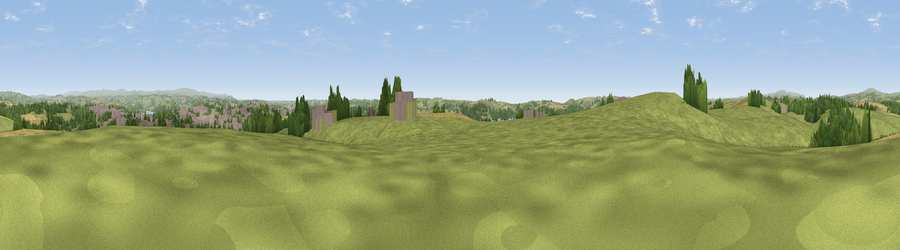

Viewpoint near Forder
#16731 in England · top 29% of its area beats it · near ForderWhere it is
The exact computed spot (SX 40125 58675). Click the marker for map links.
The view, rendered

A 360° render of this exact spot computed from the terrain model, tree cover and land cover — summer colours, afternoon light, calibrated against photographs of famous viewpoints. Real trees, hedges and buildings will differ in detail.
The panorama
Grey silhouette: terrain skyline in each direction (720 bearings, Earth curvature and refraction included). Dashed green: skyline with trees (+15 m) and buildings (+8 m) as obstacles. Blue strip: how far the ground is visible on each bearing.
Where the view opens
Wedge length = distance to the farthest visible ground on that bearing (vegetation-aware). Rings at 10, 25 and 50 km.
What fills the view
66% grassland · 14% woodland · 10% cropland · 9% built-up · 1% water
Angular shares of the visible panorama (visual magnitude), not map area. Landscape diversity 0.46 (0–1 Shannon).
Key numbers
More beautiful places nearby
The staircase of upgrades: each row has a higher view potential than everything closer. Driving times are estimates from straight-line distance, calibrated against real road routing — check an actual route before setting out.
| Place | Direction | Drive | Score |
|---|---|---|---|
| Cumble Tor | WNW · 1 km | ~4 min | 64.5 |
| Viewpoint near Landrake | W · 3 km | ~7 min | 69.4 |
| Viewpoint near Freathy | SSW · 6 km | ~12 min | 76.7 |
| Viewpoint near Crafthole | SW · 7 km | ~14 min | 80.5 |
| Viewpoint near Crafthole | SW · 7 km | ~15 min | 81.0 |
| Viewpoint near Downderry | SW · 8 km | ~16 min | 83.5 |
| Viewpoint near Polperro | WSW · 22 km | ~37 min | 83.7 |
| Pencarrow Head | WSW · 26 km | ~42 min | 86.0 |
50.40614, -4.25121 · source: screening · position refined by local search. Computed location — check access rights before visiting.